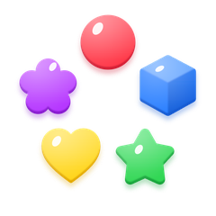
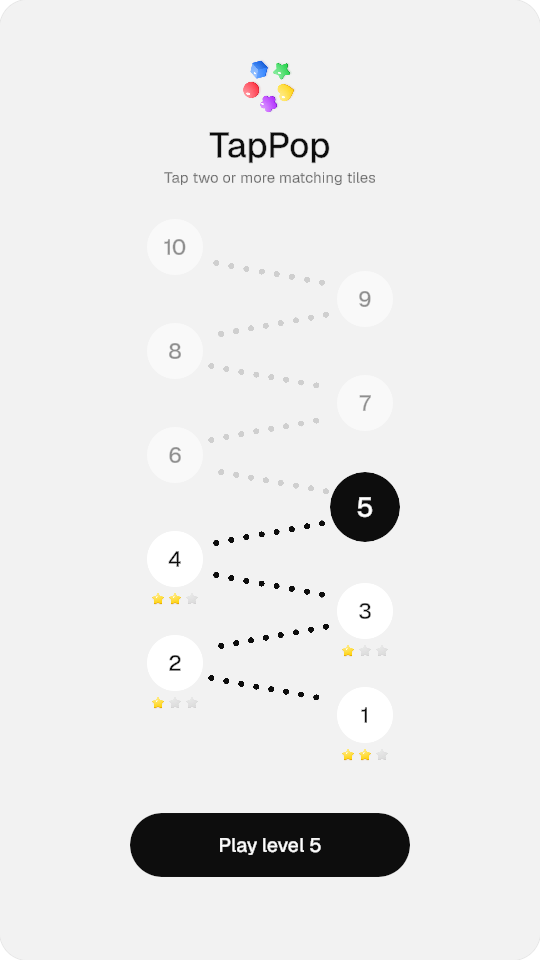
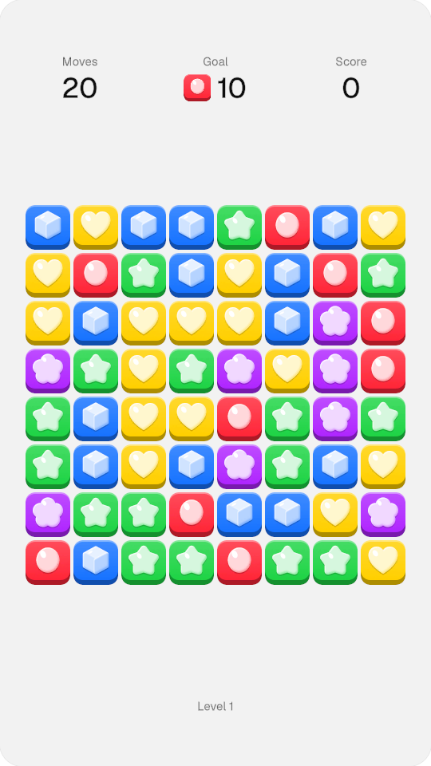
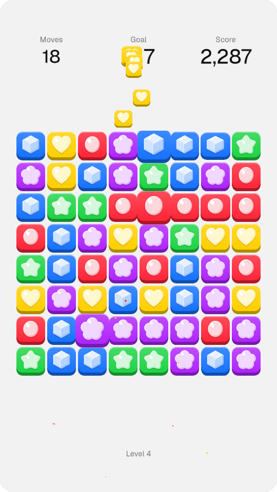
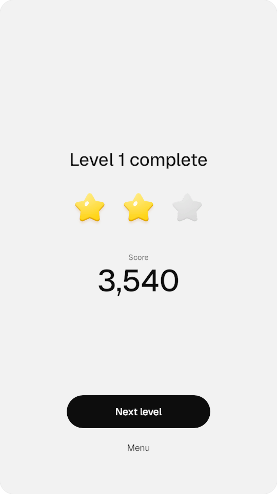
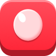
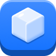

UI style guide · Unity work sample
A tap-to-pop puzzle: tap two or more touching tiles of one colour to pop them. Where tiles land, four or more of one colour pop by themselves. Ten levels on a path: each asks for one more tile or gives one move fewer. The interface stays almost invisible so the tiles carry the whole game.
Why it is built this way: 11 Decisions. How it was made in a week with Claude: 12 How it was made.




Ink on light grey, white only for path nodes and empty slots, no cards, frames or shadows. Colour lives only in the tiles, so the board is the first thing the eye finds.
Sphere, cube, star, heart, flower. Every tile has its own silhouette, so it reads without colour and at small sizes.
All copy is TextMeshPro in Geist. PNGs carry no words, so the UI localises and rescales without new art.


Pop particles take the tile colour from the Tile Set asset.
Geist, two weights: Medium for numbers and titles, Regular for everything else. Medium runs at −2 tracking.
| Role | Weight | Unity px | Figma 1x | Sample |
|---|---|---|---|---|
| Score | Medium | 120 | 60 | 4,300 |
| Display | Medium | 84 | 42 | TapPop |
| Title · Stat | Medium | 72 | 36 | Level 3 complete |
| Button | Medium | 40 | 20 | Next level |
| Body | Regular | 34 | 17 | Tap two or more matching tiles |
| Label | Regular | 30 | 15 | Moves · Goal · Score |
tile_redtile_bluetile_greentile_yellowtile_purplelogo_mark · 120icon_star_full · 75icon_star_empty · 75fx_spark · 16, drawn whiteIcons share the tile language: a soft jelly body, a darker rim at the bottom and one white gloss. The spark is drawn white so Unity can tint it with the colour of the tile that popped.
btn_primaryicon_star_full · icon_star_emptycell_emptynode_level · path_dotFrame 540 × 960. Layers named type_name. Export PNG @2x.
Exports land in figma-export/ next to the Unity project.
TapPop › Import From figma-export sorts files by prefix into Tiles, UI, Icons, FX, Backgrounds and drops the @2x suffix.
Sprite, 100 PPU, no mipmaps, clamp, compressed HQ. 9-slice borders from the prefix on first import; manual edits survive re-exports.
Each UI image names the art it expects and is filled by file name. One sprite atlas: padding 4, no rotation, backgrounds left out.
File names are the contract. A PNG named tile_red lands in Tiles and fills every image that asks for tile_red, so art changes without touching the scene or the code.
That made iteration cheap: on day one the tiles changed twice, from placeholders to balloon animals to jelly shapes, and each swap was an export and one click. Import settings come from rules, so nobody has to remember them.
btn_, tag_, panel_, frame_ or bar_, and the 9-slice borders are set on import.tools/make_art.py draws the logo, stars and spark as vector shapes in the tile style (soft body, darker rim, one gloss) and renders them as @2x PNGs into figma-export/, so they go through the same import as the Figma art.
tools/make_sfx.py synthesises the three pop sounds, a fast upward pitch glide with a short click, as WAV files. No licensed audio. Both outputs are checked in, so the project opens without Python.
| Prefix | Border @2x | Max radius (1x) |
|---|---|---|
btn_ | 64 | 32 · pill, 64 tall |
tag_ | 48 | 24 · pill, 48 tall |
panel_ | 64 | 32 |
frame_ bar_ | 48 | 24 |
type_name_state, lower case with underscores.
tile_ cell_ board art → Tiles / UIbtn_ tag_ panel_ frame_ bar_ sliced UI → UIicon_ logo_ → Iconsfx_ particles, drawn white and tinted in Unity → FXbg_ full-screen, kept out of the atlas → Backgrounds| Moment | Motion | Time | Easing |
|---|---|---|---|
| Button press | Scale 0.92, spring back | 70 · 250 ms | Out quad · out back |
| Tap on a single tile | Wobble ±12°, damped | 300 ms | Sine |
| Pop | Grow to 1.2, shrink to 0; ripples out from the tap, 35 ms per step | 190 ms | Out quad · in back |
| Fall | Drop, then land with a 1.12 × 0.86 squash | 120 ms + 35 ms per cell | In quad · out back |
| Chain | After landing, groups of 4+ that hold a tile that just fell pop, rippling from that tile; repeats until the board is still | 100 ms after landing | Same as pop |
| Goal collect | Popped goal tiles curve up into the goal icon, which punches | 550 ms | In-out quad |
| Result screen | Paper fades in, content settles from 0.92; the level number is part of the title | 200 · 350 ms | Out quad · out back |
| Stars | Fill one by one; each lands bigger (1.25, 1.35, 1.45), bursts wider and pops a little higher | 120 ms stagger | Out back |
| Celebration | Confetti fountain from the star row: 12 pieces for one star, 30 for two, 56 and a second wave for three, plus a punch on the row | 3 waves, 60 ms apart; 2.2 s | 0.45 gravity, sideways drag |
| Start mark | Slow turn and a 3% breathe | Loop | Linear · sine |
| Current level | Path node at 1.25 scale with a 4% breathe | Loop | Sine |
| Pop sound | One short pop per ripple ring, timed with the burst; pitch climbs ring by ring and with each chain step. Three variants, picked at random | 140 ms | n/a |
All motion runs on a small coroutine tween helper; the project has no third-party packages. The pop sounds are synthesised by a script, so there is no licensed audio.
Ten levels. Each one takes away a move or asks for one more tile, never both, and the goal always stays below the moves. The goal colour goes round the tile set. Progress and best stars are saved, and the start screen shows them as a path.
| Level | Moves | Goal | 2 stars | 3 stars | Wins (goal-first · random) |
|---|---|---|---|---|---|
| 1 | 20 | 10 | 2,200 | 3,600 | 100% · 99% |
| 2 | 20 | 11 | 2,400 | 3,800 | 100% · 99% |
| 3 | 20 | 12 | 2,500 | 4,000 | 100% · 99% |
| 4 | 19 | 12 | 2,600 | 4,000 | 100% · 98% |
| 5 | 19 | 13 | 2,700 | 4,200 | 99% · 96% |
| 6 | 19 | 14 | 3,000 | 4,400 | 99% · 95% |
| 7 | 18 | 14 | 3,000 | 4,400 | 98% · 94% |
| 8 | 18 | 15 | 3,100 | 4,500 | 98% · 92% |
| 9 | 18 | 16 | 3,300 | 4,700 | 97% · 91% |
| 10 | 17 | 16 | 3,300 | 4,700 | 96% · 88% |
Tuned by simulating 4,000 games per level with two bots: one goes for the goal colour, one taps a random group. Winning stays easy, from 99% to 88% even for the random bot, so the challenge moves to the stars: two sit near the median winning score, three near the top fifth.
| Decision | Why | Instead of |
|---|---|---|
| uGUI for all UI | The usual tool for in-game mobile UI: sprites, 9-slice, atlases and prefabs, animated through RectTransforms. | UI Toolkit, which suits editor tools and data-heavy menus better |
| TextMeshPro, live text | Sharp at every size, one font asset for all copy, and words can change or be translated without new art. | Text baked into PNGs: soft when scaled, one export per language |
| One sprite atlas | The whole UI draws in a few batches. Backgrounds stay out, because they would waste most of the page. | Loose sprites, one draw call each |
| 9-slice pills and panels | One small PNG stretches to any width, and the corners never distort. | One PNG per button size |
| 1080 × 1920 reference, Expand | The Figma frame @2x maps 1:1 to Unity, and the layout fits every screen without cropping. | Match width or height, which crops on tall or wide phones |
| Scene built from code | One click rebuilds the scene with every reference wired. Colours and sizes live in one file, and a missing link stops the build. The cost: hand edits in the scene are lost on rebuild, so changes go into the builder or the assets. | A hand-wired scene: quick to start, easy to break without noticing |
| Levels as assets | Moves, goal and star scores are tuned in the Inspector, without code. | Numbers in a script |
| Particles as pooled UI images | They sort with the UI, need no extra camera and allocate nothing mid-game. | Particle System, which needs camera tricks to sit between UI layers |
| Own tween helper | A few coroutines cover every motion here, so the project needs no third-party packages. | DOTween or a similar package |
| Chain rule: 4 or more | Picked by simulation. With 2 or 3 the board kept popping by itself and played the game for you; with 4, about two taps in five start a chain. | 2+ or 3+ |
| Synthesised sounds | No licensed audio, and the pitch can climb with each ring and chain step. | Clips from a sound library |
| WebGL on GitHub Pages | Anyone can play from a link, on desktop or phone, with nothing to install. | A downloadable build |
About a week, 2 to 8 November 2026, with Claude (Anthropic) as the developer. I designed the art and the UI and made the calls; Claude wrote the C#, set up Unity, ran the builds and tested them.
A tap-to-pop mechanic: small enough for a week, and nearly all of it is UI (HUD, goal, results, feedback). One level, three screens. I draw in Figma, Claude builds in Unity.
Claude built the whole loop with placeholder shapes, so I designed against a playable build instead of static frames. My first tiles were balloon animals; I redrew them as jelly shapes so every colour also has its own silhouette. The look changed twice, from bright cards to this quiet grey UI, and each change took minutes because the scene is built from code.
The logo, stars and spark follow my tile style; Claude wrote a script that draws them from it. Then the style guide.
Playing it, I wanted tiles that land together to pop on their own, so we tested the rule by simulation before adding it. Then ten levels, the level path and a pop sound. When it felt too hard, the levels were retuned with 4,000 simulated games each.
The Unity project went on GitHub. Feedback from a game developer led to darker labels, the level number in the result title, a celebration that grows with the stars, and these last two sections.